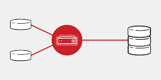

Middleware, también conocido como lógica de intercambio de información entre aplicaciones o agente intermedio, es un sistema de software que ofrece servicios y funciones comunes para las aplicaciones
Middleware es un software que asiste a una aplicación para interactuar o comunicarse con otras aplicaciones, software, redes, hardware y/o sistemas operativos. Éste simplifica el trabajo de los programadores en la compleja tarea de generar las conexiones que son necesarias en los sistemas distribuidos. De esta forma se provee una solución que mejora la calidad de servicio, seguridad, envío de mensajes, directorio de servicio
